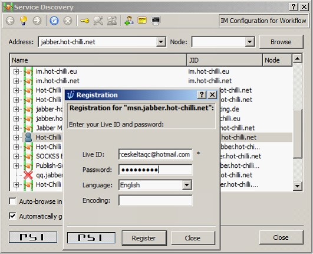

No
Steps to Configure Jabber Server account for MSN Transporter
To enable communication between two Instant Messengers through AVEVA Work Tasks workflows, an account needs to be configured in the Jabber server. You can view the list of available Jabber servers which support different messengers by visiting http://www.jabberes.org/Servers/.
For this configuration, you would require two active MSN email accounts. One MSN Id would act as the source id which is configured inside the Jabber account. It would act as a transport for the Jabber Id. sourceskeltaqc@hotmail.com is being used as an example in this document.
The other MSN id acts as the destination id, which would receive instant messages from AVEVA Work Tasks. destination@hotmail.com is being used as an example in this document.
Note: Please note that the steps given below show Jabber Server account configuration using MSN transport service. However, the below steps are also applicable for configuring Jabber Server account for Yahoo transport services as well.
- Download and install PSI from the following link - http://psi-im.org/download
- Launch Psi from the Start menu.
- Psi launch screen appears along with the Useful Tips screen.
- Click General -> Account Setup
.
- Psi: Jabber Account screen appears. Click Add.
- Psi:Add Account screen appears. Enter the name for new account. Select the Register new account check box. Click Add.
- Register Account screen appears. Select the name of the server with which you wish to register. Click Next.
- Register Account screen appears. Enter a user name and password you choose to register with the server. For some Jabber servers, you would be required to enter CAPTCHA taken from the URL specified. Click Next.
- Success message box appears, if the registration is successful.
- Psi: Account Properties screen appears. Click Save.
- In the Psi screen, select the Jabber account. Select Status and set it as Online.
On first login to the account, Psi requires you to publish your profile. Enter full name and then click Publish.
- Click General -> Service Discovery.

- Service Discovery lists out all the transport services available for the selected Jabber server. Select the transport service which supports MSN.
- Right click and click Register to register the selected Transport Service.
Note: Please ensure that you make a note of the JID of the selected transport service, as it would be required while configuring IM in the AVEVA Work Tasks Notification activity.
- Enter your Live Id and Password (source MSN account details) to complete the Transport Service registration.

- When there is an Instant Messaging request from the destination id for the registered source id, you would need to authorize this request. Log in to MSN instant messenger using the destination messenger id. Add the source MSN Id as a new contact as shown in the image given below.

- Go to the Psi screen and select the registered transport service. Right click and click Add/Authorize to Contact List.
This would authorize the Instant Messaging request.
- After authorizing the Instant Messaging request, click Receive Incoming Event to receive incoming events from the source id.
- Click Add/Auth. It tries to authenticate the Jabber account. This process might take some time. Authentication is successful if the Jabber account is available. Click Close.